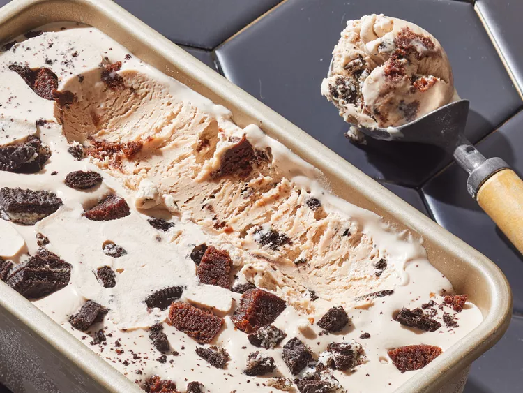
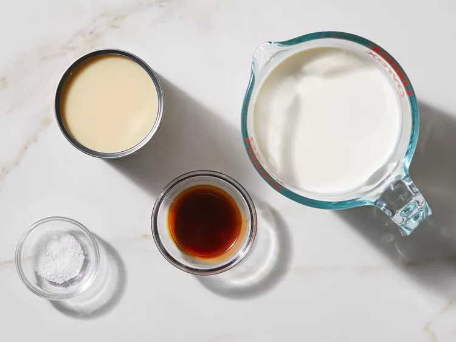

This easy no-churn ice cream recipe requires just a few ingredients and no special equipment.
Enjoy a creamy, homemade ice cream that you can whip up in no time.
You'll find the full, step-by-step recipe below - but here's a brief overview of what you can expect when you make no-churn ice cream:
Gather all ingredients.
Add heavy cream to the bowl of a stand mixer with a whisk attachment.
Beat on medium-high speed until stiff peaks form, 2 to 3 minutes.
Add sweetened condensed milk, vanilla and salt. Mix on low speed until
fully combined, 20 to 30 seconds, scraping sides of bowl as needed.
Transfer mixture into a 9x5-inch loaf pan, spreading evenly in the pan.
Cover with plastic wrap, gently pressing down to touch the ice cream
mixture and seal out any air bubbles. Freeze until firm, at least 6 hours
before serving.